Generated by scripts/compare_meta_to_benchmark.py.
| run | run_dir | manual_meta | aggregate_rows | |
|---|---|---|---|---|
| 0 | v1 | /home/zorro/repos/autonima-results/projects/dementia/v1 | False | all_analyses, all_studies, all_abstract |
| 1 | v1-allstudies | /home/zorro/repos/autonima-results/projects/dementia/v1-allstudies | False | all_analyses, all_studies, all_abstract |
| 2 | v1-annotation-only | /home/zorro/repos/autonima-results/projects/dementia/v1-annotation-only | False | all_analyses, all_studies, all_abstract |
| run | missing_count | missing_preview | |
|---|---|---|---|
| 0 | v2-allstudies | 4 | all -> dementia_all, decrease -> dementia_decreasing_activity, functional -> functional, structural -> structural |
| manual_name | auto_name | manual_exists | run::v1 | run::v1-allstudies | run::v1-annotation-only | run::v2-allstudies | |
|---|---|---|---|---|---|---|---|
| 0 | all | dementia_all | True | True | True | True | False |
| 1 | decrease | dementia_decreasing_activity | True | True | True | True | False |
| 2 | functional | functional | True | True | True | True | False |
| 3 | structural | structural | True | True | True | True | False |
Counts are computed from each run's nimads_annotation.json and PMID-linked through nimads_studyset.json. Includes mapped annotations and all* annotations.
| run | manual_name | auto_name | n_analyses | n_unique_pmids | is_mapped | |
|---|---|---|---|---|---|---|
| 0 | v1 | all | dementia_all | 162 | 44 | True |
| 1 | v1-allstudies | all | dementia_all | 103 | 29 | True |
| 2 | v1-annotation-only | all | dementia_all | 51 | 14 | True |
| 3 | v1 | decrease | dementia_decreasing_activity | 27 | 15 | True |
| 4 | v1-allstudies | decrease | dementia_decreasing_activity | 20 | 11 | True |
| 5 | v1-annotation-only | decrease | dementia_decreasing_activity | 10 | 5 | True |
| 6 | v1 | functional | functional | 23 | 6 | True |
| 7 | v1-allstudies | functional | functional | 11 | 4 | True |
| 8 | v1-annotation-only | functional | functional | 1 | 1 | True |
| 9 | v1 | structural | structural | 140 | 39 | True |
| 10 | v1-allstudies | structural | structural | 93 | 26 | True |
| 11 | v1-annotation-only | structural | structural | 51 | 14 | True |
| 12 | v1 | all_abstract | 539 | 147 | False | |
| 13 | v1-allstudies | all_abstract | 410 | 101 | False | |
| 14 | v1-annotation-only | all_abstract | 220 | 40 | False | |
| 15 | v1 | all_analyses | 482 | 111 | False | |
| 16 | v1-allstudies | all_analyses | 376 | 76 | False | |
| 17 | v1-annotation-only | all_analyses | 220 | 40 | False | |
| 18 | v1 | all_studies | 539 | 147 | False | |
| 19 | v1-allstudies | all_studies | 410 | 101 | False | |
| 20 | v1-annotation-only | all_studies | 220 | 40 | False |
| run | v1 | v1-allstudies | v1-annotation-only |
|---|---|---|---|
| auto_name | |||
| dementia_all | 162 | 103 | 51 |
| dementia_decreasing_activity | 27 | 20 | 10 |
| functional | 23 | 11 | 1 |
| structural | 140 | 93 | 51 |
| all_abstract | 539 | 410 | 220 |
| all_analyses | 482 | 376 | 220 |
| all_studies | 539 | 410 | 220 |
| run | v1 | v1-allstudies | v1-annotation-only |
|---|---|---|---|
| auto_name | |||
| dementia_all | 44 | 29 | 14 |
| dementia_decreasing_activity | 15 | 11 | 5 |
| functional | 6 | 4 | 1 |
| structural | 39 | 26 | 14 |
| all_abstract | 147 | 101 | 40 |
| all_analyses | 111 | 76 | 40 |
| all_studies | 147 | 101 | 40 |
| project | annotation | n_analyses | n_unique_pmids | is_dataset_total | annotation_path | studyset_path | |
|---|---|---|---|---|---|---|---|
| 0 | dementia | all | 31 | 29 | False | /home/zorro/repos/neurometabench/data/nimads/dementia/merged/nimads_annotation.json | /home/zorro/repos/neurometabench/data/nimads/dementia/merged/nimads_studyset.json |
| 1 | dementia | decrease | 26 | 24 | False | /home/zorro/repos/neurometabench/data/nimads/dementia/merged/nimads_annotation.json | /home/zorro/repos/neurometabench/data/nimads/dementia/merged/nimads_studyset.json |
| 2 | dementia | functional | 18 | 17 | False | /home/zorro/repos/neurometabench/data/nimads/dementia/merged/nimads_annotation.json | /home/zorro/repos/neurometabench/data/nimads/dementia/merged/nimads_studyset.json |
| 3 | dementia | structural | 19 | 18 | False | /home/zorro/repos/neurometabench/data/nimads/dementia/merged/nimads_annotation.json | /home/zorro/repos/neurometabench/data/nimads/dementia/merged/nimads_studyset.json |
| 4 | dementia | __dataset_total__ | 31 | 29 | True | /home/zorro/repos/neurometabench/data/nimads/dementia/merged/nimads_annotation.json | /home/zorro/repos/neurometabench/data/nimads/dementia/merged/nimads_studyset.json |
| n_rows | n_cols | dice_mean_full | dice_mean_diagonal | pearson_mean_full | pearson_mean_diagonal | |
|---|---|---|---|---|---|---|
| run | ||||||
| v1 | 7 | 4 | 0.219 | 0.152 | 0.456 | 0.362 |
| v1-allstudies | 7 | 4 | 0.197 | 0.106 | 0.438 | 0.328 |
| v1-annotation-only | 7 | 4 | 0.196 | 0.066 | 0.383 | 0.211 |
| run | v1 | v1-allstudies | v1-annotation-only |
|---|---|---|---|
| auto_name | |||
| dementia_all | 0.257 | 0.199 | 0.086 |
| dementia_decreasing_activity | 0.128 | 0.067 | 0.095 |
| functional | 0.067 | 0.038 | 0.029 |
| structural | 0.155 | 0.121 | 0.055 |
| run | v1 | v1-allstudies | v1-annotation-only |
|---|---|---|---|
| auto_name | |||
| dementia_all | 0.453 | 0.412 | 0.286 |
| dementia_decreasing_activity | 0.334 | 0.293 | 0.218 |
| functional | 0.226 | 0.204 | 0.061 |
| structural | 0.437 | 0.403 | 0.277 |
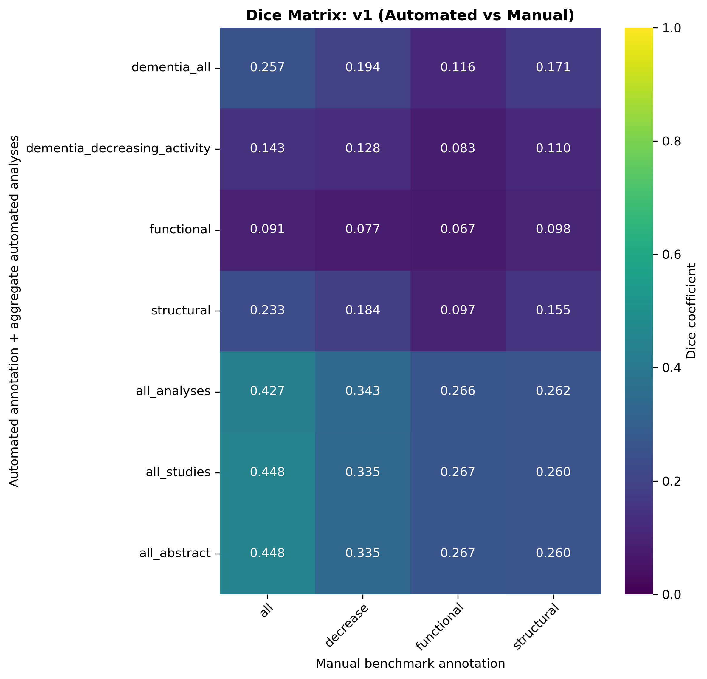
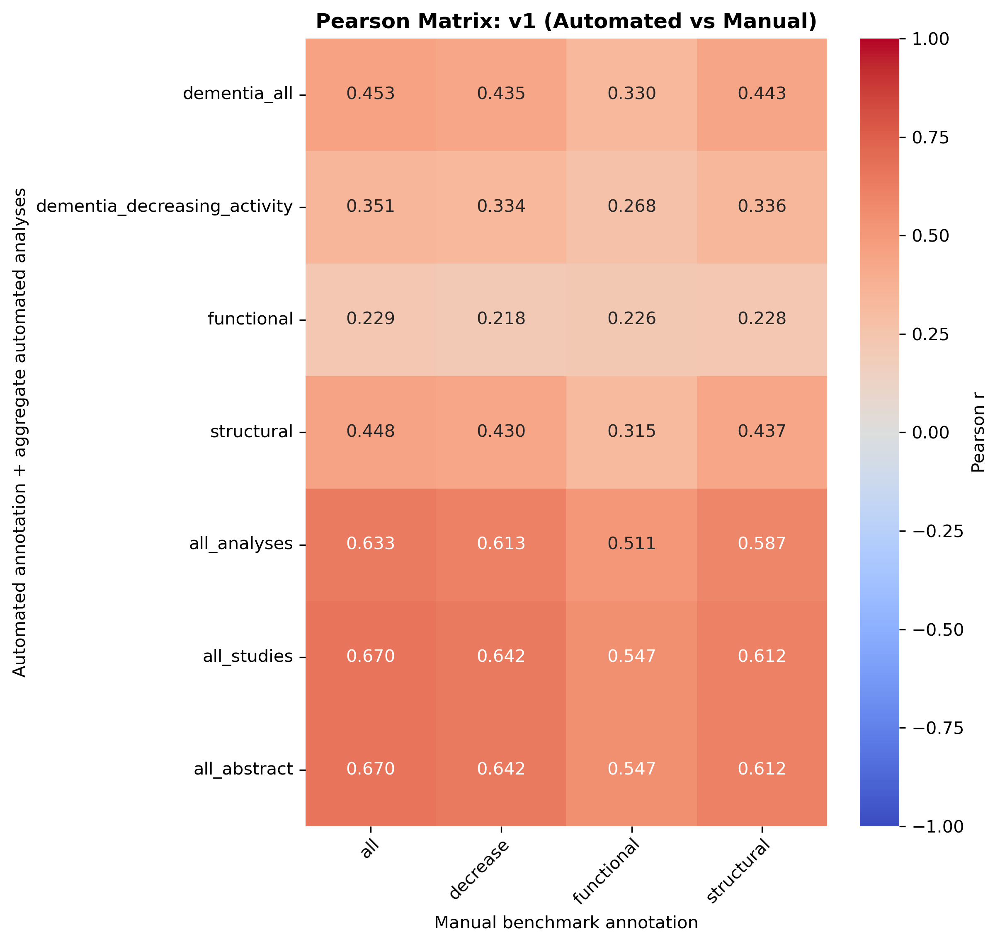
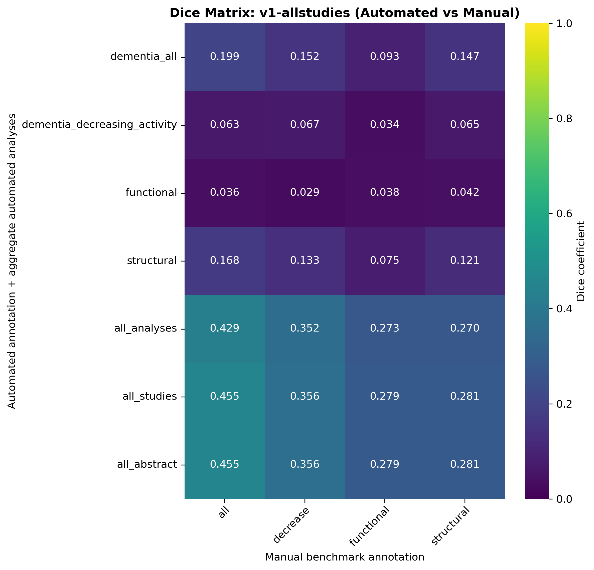
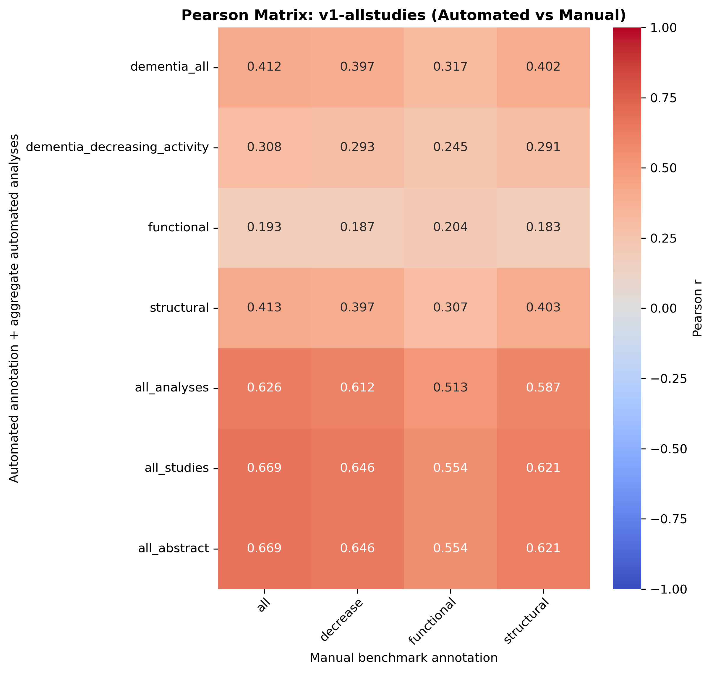
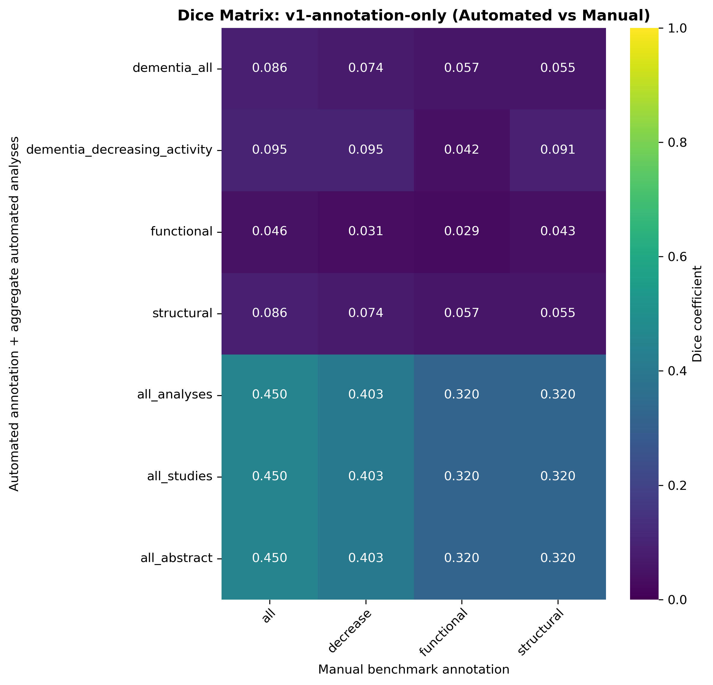
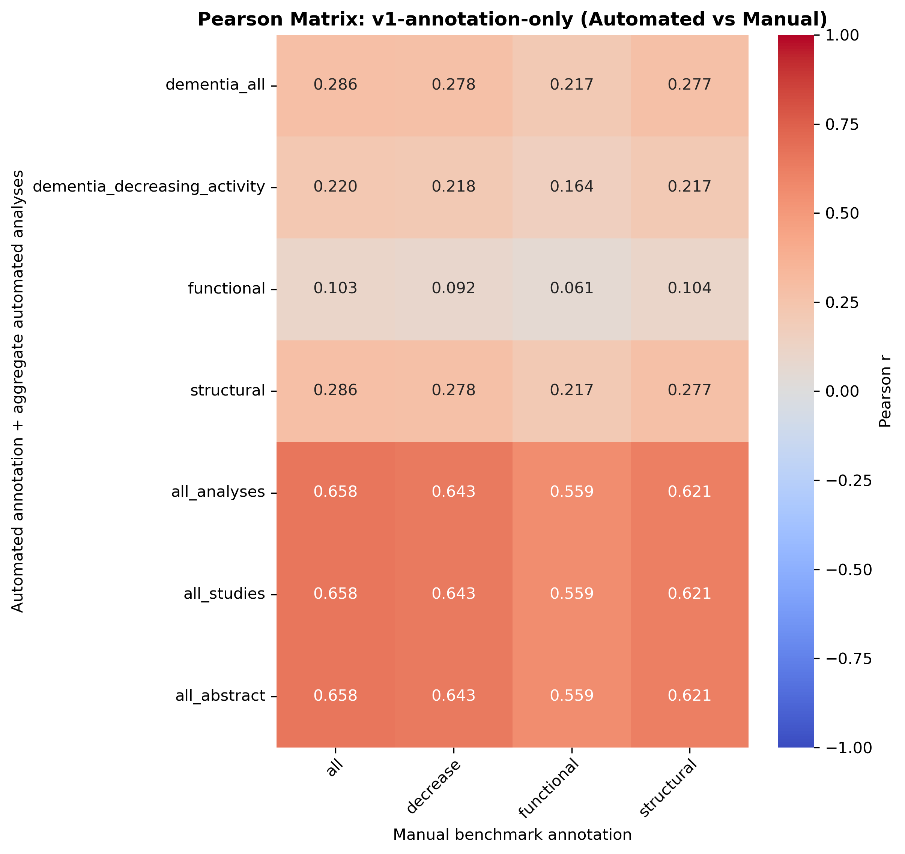
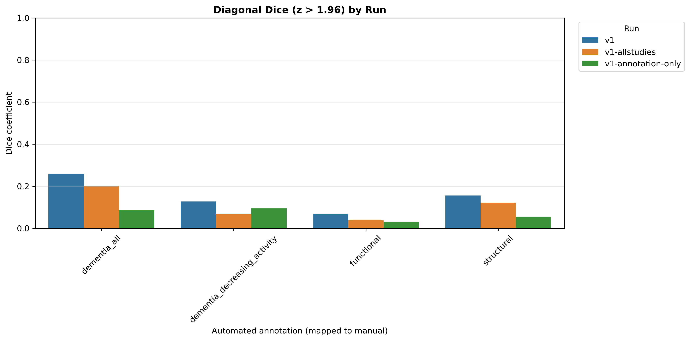
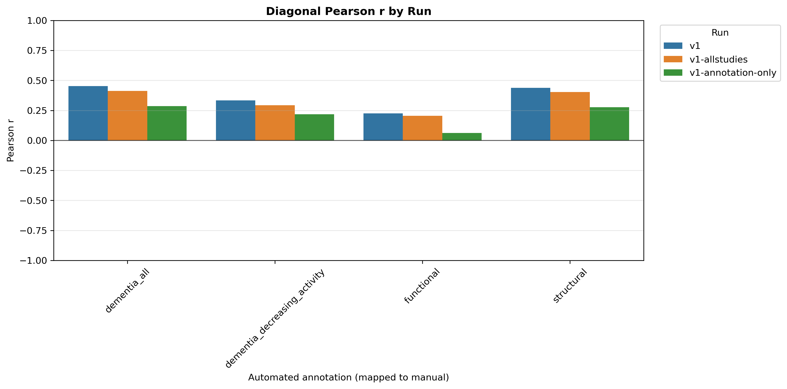
Ordered as manual benchmark first, then each automated run. Includes only all_analyses and mapped custom annotations.
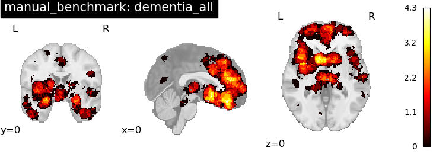
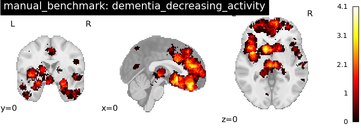
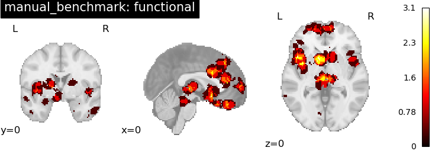
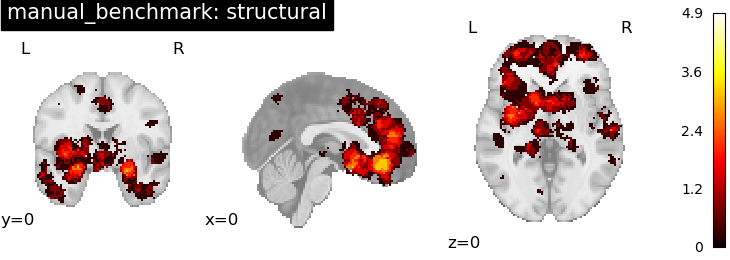
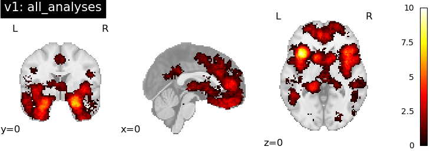
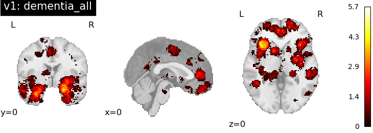
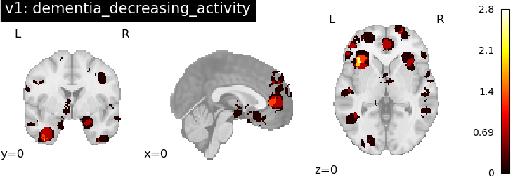
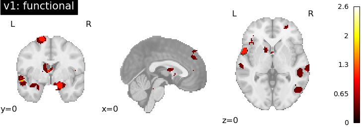
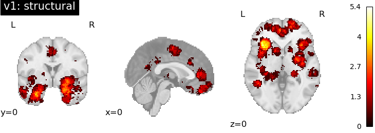
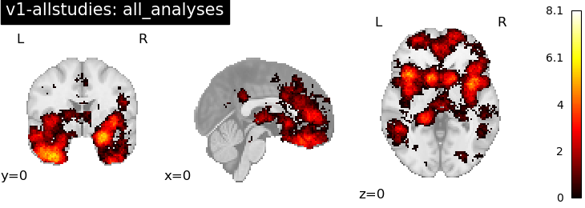
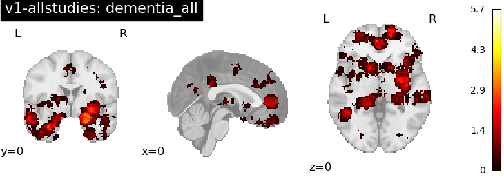
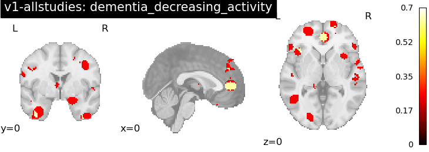
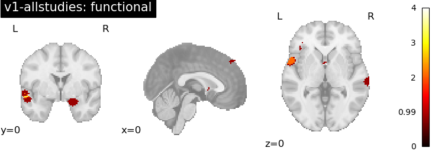
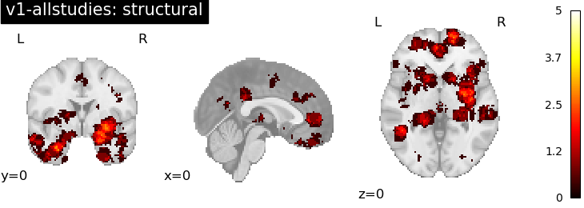
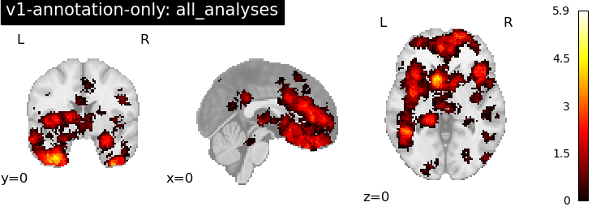
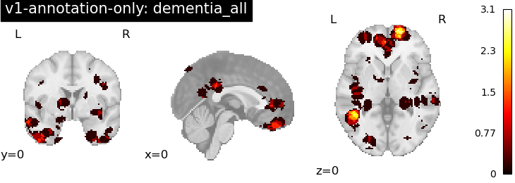
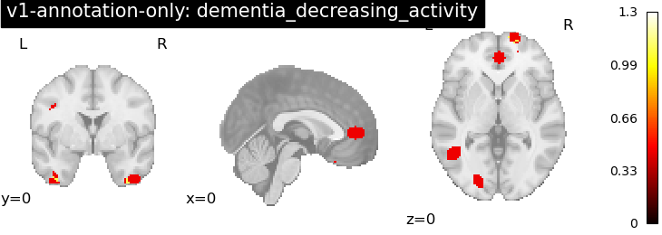
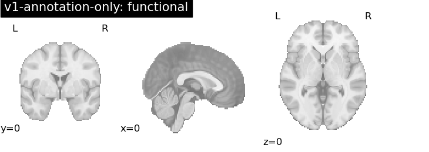
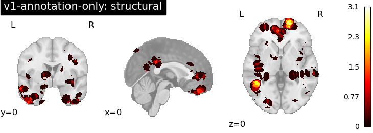